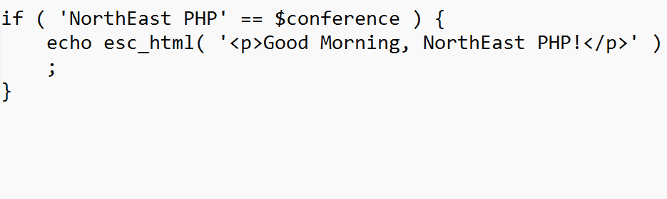
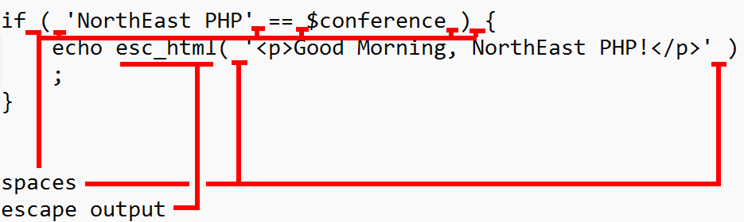

Enforcing Coding Standards Across Teams
A brief introduction to PHP CodeSniffer
Created by Bradley Jacobs / @crazyjaco
Topics
- What are coding standards?
- Why do we need coding standards?
- Methods to enforce coding standards
- PHP CodeSniffer
- How to use phpcs at the command line
- SublimeText integration
- Enforcing with Git
About Me
Over the past several years, I've worked at a number of local agencies, where I specialized in WordPress development One of those years was spent at a WordPress.com VIP partner. If you don't know what that means, every code commit I made to WordPress.com VIP was reviewed by and was required to meet a specific standard. The code had a lot of eyes on it and was well vetted. Most of my work involved maintenance of existing code, as well, the quality of which, was all over the map. For these reasons I quickly grew an appreciation for coding standards across teams.
What are Coding Standards?
What are Coding Standards?
Coding Styles mutually agreed upon by a team or community
Cover things like:
- File Organization
- Code Comments
- Indentation
- Statements/Loops
- White Space
- Naming Conventions
- Tabs vs Spaces
- etc
What are Coding Standards?
What are Coding Standards?
Why do we need coding standards?
- Improve Readability
- Improve Maintainability
Benefits:
- Consistency
- Collective Ownership
- Peer Review
Methods to enforce coding standards?
Sometimes referred to as Static Analysis ToolsPHP CodeSniffer
Install instructions (WPCS)
Standards

The wonderful thing about standards is that there are so many of them to choose from. Grace Hopper (among others)
Ruleset.xml and Sniffs
Standards are made of groups of sniffs dictated by ruleset.xml
A sniff tests a basic coding practice
Ruleset.xml
WordPress Core Standard's ruleset.xmlPHPCS at the command line
phpcs -i ( What Coding Standards are available )
phpcs --standard=PSR2 <filename> (Run on file against specified standard)
phpcs --standard=WordPress --report-file=C:\\PHPCodeSniffer\test-report.txt C:\\xampp\\htdocs\\amazon\\wp-cron.php
phpcs --standard=WordPress --report-file=C:\\PHPCodeSniffer\\test-report-json.txt --report=json C:\\xampp\\htdocs\\amazon\\wp-cron.php
SublimeText integration
Sublime-phpcs
Github
Sublime Package Control
Gist w/ Windows Settings
PHPStorm Integration
Enforcing with Git
Enforcing Coding Standards Across Teams
Mutually agree on a coding standard
Starts from the moment your team members get their laptops
Automated checks should be in place at every step of development
Check early. Check often.
It will only succeed if everyone buys in (or is forced to!)
Review
- What are coding standards?
- Why do we need coding standards?
- Methods to enforce coding standards
- PHP CodeSniffer
- How to use phpcs at the command line
- SublimeText integration
- Enforcing with Git